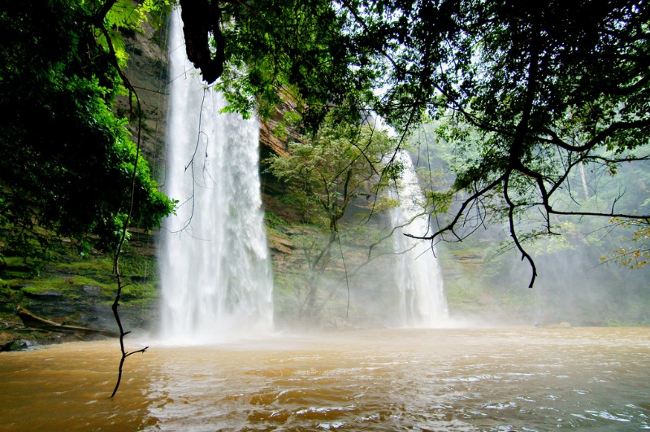
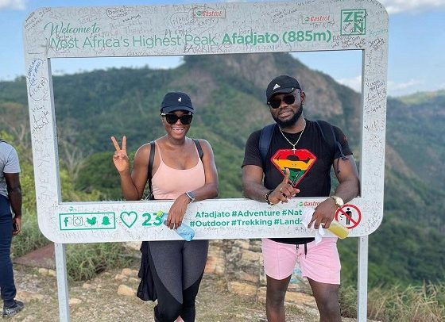

Favourite Travel Destinations
-
Central Region
-
Kukum National Park
Kakum National Park, located in the coastal environs of the Central Region[1][2] of Ghana,[3] covers an area of 375 square kilometres (145 sq mi). Established in 1931 as a reserve, it was gazetted as a national park only in 1992 after an initial survey of avifauna was conducted. The area is covered with tropical forest.[4][5][6] The uniqueness of this park lies in the fact that it was established at the initiative of the local people and not by the State Department of wildlife who are responsible for wildlife preservation in Ghana. It is one of only 3 locations in Africa with a canopy walkway,[7] which is 350 metres (1,150 ft) long and connects seven tree tops which provides access to the forest.

- Learn more...
-
Eastern Region
-
Boti Falls
Boti Falls is a twin waterfall located at Boti in Yilo Krobo District in the Eastern Region of Ghana. These twin falls, which come from two rivers, are referred to as female and male; according to local myth, a rainbow is formed when they merge
- 
- Learn more ...
-
Volta Region
-
Mount Afadjato
Mount Afadja, known as Afadjato to the Ewe people of Ghana and Togo, is one of the highest mountain in Ghana.[2] The summit is located in the Volta Region, near the border with Togo, close to the villages of Liati Wote and Gbledi Gbogame in the Afadjato South District and Hohoe Municipality, respectively. It is about 178 kilometers (111 mi) northeast of Accra, and 178 kilometers (111 mi) northwest of Lomé.
- 
- Learn more ...